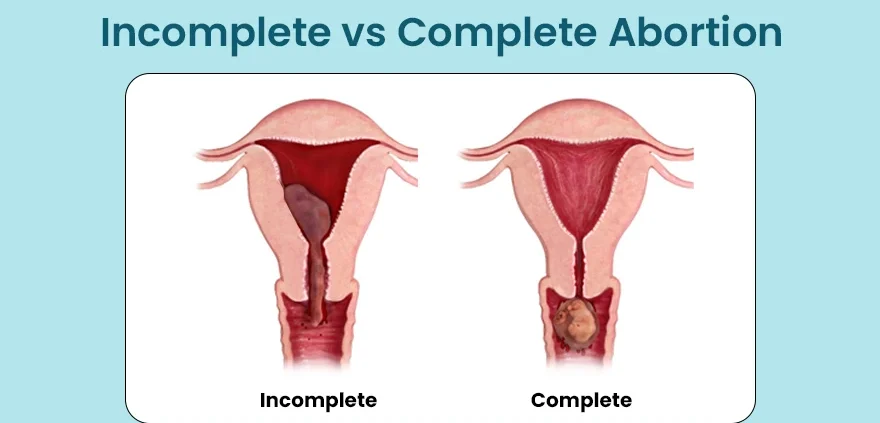
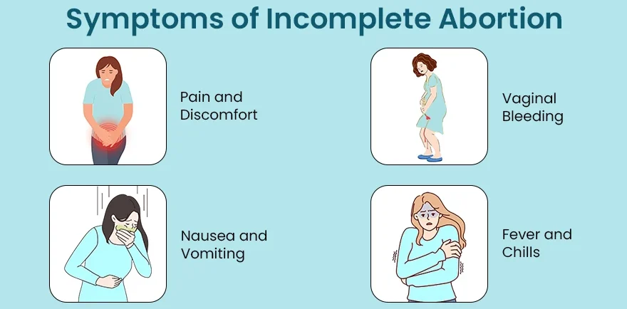
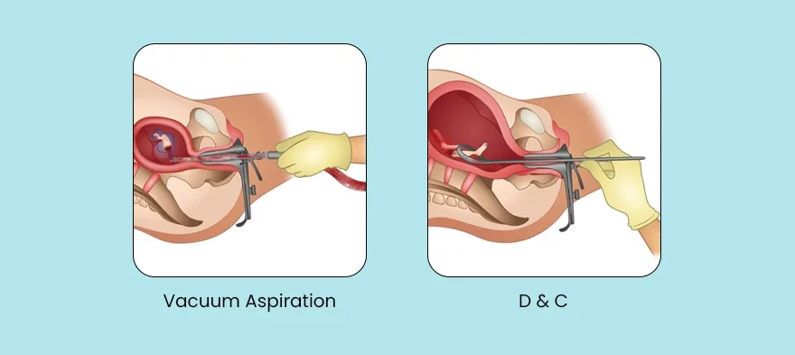
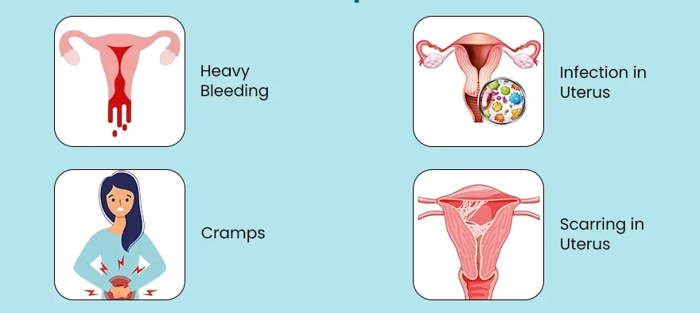

Expanded Nursing Uganda Explanation
Incomplete and Complete Abortion should be understood beyond a short definition. Link the concept to patient history, focused assessment, common risks, nursing priorities, documentation and evaluation of outcomes.
01 Clinical Features of Incomplete Abortion
- Heavy and Excessive Vaginal Bleeding : Incomplete abortion presents with heavy and profuse vaginal bleeding, which may be accompanied by the passage of blood clots and tissue fragments.
- Abdominal Pain and Backache : Individuals experiencing incomplete abortion commonly report abdominal pain, which may be crampy or persistent, and backache, indicative of ongoing uterine contractions and tissue expulsion.
- Cervical Changes : Physical examination may reveal a partially open and soft cervix, reflecting the incomplete nature of the abortion process and the presence of retained products of conception within the uterus.
- Bulky Uterus : A palpable enlargement of the uterus may be observed, indicating the presence of retained tissue and blood within the uterine cavity.
- Products of Conception Felt on Abdominal Palpation : May detect the presence of retained products of conception during abdominal palpation.
- Signs of Anaemia : Symptoms such as fatigue, weakness, and pallor may indicate the development of anaemia due to prolonged or heavy bleeding associated with incomplete abortion.
- Signs of Shock: In severe cases, incomplete abortion can lead to signs of shock, including rapid heart rate, low blood pressure, and cold, clammy skin, reflecting the body’s response to significant blood loss and compromised circulation.
- Fever and Chills: The presence of fever and chills may indicate an infection, which can complicate incomplete abortion and necessitate immediate medical attention.
- Foul-Smelling Vaginal Discharge : In cases of infection, individuals may experience a foul-smelling vaginal discharge, suggestive of uterine or pelvic involvement requiring evaluation and treatment.
- Emotional Distress : Coping with the physical symptoms and emotional impact of incomplete abortion can lead to psychological distress, including feelings of grief, anxiety, and depression.
02 Management of Incomplete Abortion
- Admit the mother to a gynaecological ward.
- Take the patient’s history.
- Reassure the patient and relatives to allay anxiety.
- Notify the doctor for investigations such as HB, grouping, and cross-match.
- Resuscitate the patient with intravenous fluids.
- If in shock, keep the patient warm.
- Monitor vital observations.
- Obtain informed consent.
- Administer oxytocin or misoprostol to contract the uterus and expel retained products, controlling bleeding.
- If products are seen in the vagina, perform manual evacuation with sterile gloves.
- Monitor airway, breathing, and circulation.
- Transfuse according to laboratory HB results.
- Shave and dress the patient in a clean theatre gown, informing theatre staff.
- Evacuate the uterus under general anaesthesia in theatre when the mother is stable. Manual vacuum aspiration is recommended to remove retained products
- Misoprostol 400-800 mcg every 6 hours orally OR Oxytocin may be recommended to control blood loss.
- Rhesus negative mothers should receive Anti-D immunoglobulin 300 μg IM single dose.
- Provide prophylactic antibiotics.
- Administer ferrous/folic acid.
- Ensure a good nutritious diet.
Provide advice on discharge:
- Adequate rest at home.
- Nutritious diet.
- Report for scheduled reviews.
- Take prescribed medications.
- Attend antenatal care clinics as required.
03 Complications of Incomplete Abortion
- Hemorrhagic Shock : Excessive bleeding associated with incomplete abortion can lead to hemorrhagic shock, a critical condition characterized by inadequate blood flow to vital organs. This can result in symptoms such as rapid heart rate, low blood pressure, and organ dysfunction.
- Anaemia : Prolonged or heavy bleeding during incomplete abortion can lead to anaemia, a condition characterized by a low red blood cell count, which can result in fatigue, weakness, and shortness of breath.
- Sepsis : Incomplete abortion can increase the risk of uterine infection, potentially leading to sepsis, a life-threatening condition characterized by the body’s extreme response to an infection. Symptoms of sepsis may include fever, rapid breathing, elevated heart rate, and altered mental status.
- Uterine Perforation: In rare cases, instrumentation or medical procedures during incomplete abortion can lead to uterine perforation.
- Retained Tissue : Incomplete abortion may result in the retention of fetal or placental tissue within the uterus, increasing the risk of infection, haemorrhage, and ongoing symptoms.
- Future Fertility Concerns: In cases of recurrent or severe incomplete abortion, there may be concerns about its impact on future fertility and reproductive health.
- Emotional and Psychological Impact : Coping with the physical and emotional aspects of incomplete abortion can lead to psychological distress, including feelings of grief, guilt, and anxiety.
04 COMPLETE ABORTION
Complete abortion occurs when all products of conception have been expelled spontaneously.
05 Clinical Features of Complete Abortion
- Resolution of Pain : Following a complete abortion, patients experience a cessation of the previously reported abdominal pain and cramping, indicating the successful expulsion of all products of conception from the uterus.
- Minimal Blood Loss : Scanty or minimal vaginal bleeding is commonly observed after a complete abortion, reflecting the natural cessation of uterine bleeding as the pregnancy-related tissues are fully expelled.
- Well-Contracted Uterus : Physical examination may reveal a well-contracted uterus, indicating that the uterine muscles have effectively expelled all fetal and placental tissues, leading to the restoration of its normal size and tone.
- Regression of Signs of Pregnancy : As the pregnancy-related tissues are expelled during a complete abortion, signs and symptoms of pregnancy, such as breast tenderness, nausea, and fatigue, usually regress, reflecting the resolution of the pregnancy.
- Emotional Relief : Following a complete abortion, individuals may experience a sense of emotional relief and closure as they no longer experience the physical symptoms and uncertainty associated with an ongoing pregnancy complication.
- Negative Pregnancy Test : A pregnancy test may return negative following a complete abortion, indicating the absence of pregnancy hormones in the bloodstream.
06 Management of Complete Abortion.
- Evacuation of the uterus is NOT necessary.
- Observe for heavy bleeding.
- Ensure follow-up of the woman after treatment.
- Recommend bed rest
- Rhesus negative mothers should receive Anti-D immunoglobulin 300 μg IM single dose within 72 hours.
- Advice the mother to come back if bleeding reoccurs or she develops fever which may be a sign of infection.
Note: If no active bleeding and ultrasound shows an empty uterine cavity, no further treatment is required, and hospital admission is unnecessary.
07 Nursing Uganda Clinical Lens
Use Incomplete and Complete Abortion as a practical nursing topic, not only a memorized definition. Read the topic through the safety of two patients: the mother and the fetus or newborn.
- What to understand first: define incomplete and complete abortion, identify the normal or expected pattern, then explain what changes when the patient is unwell.
- Why it matters in care: the nurse must recognize risk early, explain findings clearly, document accurately and know when to escalate.
- How to revise it: connect each point to assessment, nursing diagnosis or care problem, intervention, rationale and evaluation.
08 Assessment Guide
- Maternal vital signs, bleeding, pain, contractions, uterine tone and danger signs.
- Fetal or newborn wellbeing, feeding, temperature, breathing and activity.
- History of pregnancy, parity, medications, allergies, investigations and referral risks.
09 Nursing Priorities, Rationales and Outcomes
- Recognize danger signs early and escalate without delay.
- Provide respectful communication, privacy, infection prevention and clear documentation.
- Teach the mother what to monitor at home and when to return urgently.
The rationale for these priorities is patient safety: nursing actions should prevent deterioration, reduce discomfort, support recovery and create clear evidence for the next caregiver.
- Expected outcome: Mother and baby remain stable, danger signs are acted on early, and the family understands follow-up instructions.
10 Patient Teaching and Revision Check
- Explain incomplete and complete abortion in simple language the patient or caregiver can repeat back.
- Teach warning signs, medicine or follow-up instructions, hygiene or lifestyle points where relevant.
- For exams, prepare a short answer using: definition, causes or risk factors, signs, assessment, management, complications and prevention.
- For ward practice, document baseline findings, actions taken, patient response and the plan for review.
Illustrations and Diagrams (4)




Related Video Lectures
Watch nursing lecture videos on YouTube for this topic. Opens in a new tab.
Watch on YouTubeExternal link: YouTube may use its own cookies and terms. Nursing Uganda is not affiliated with YouTube.